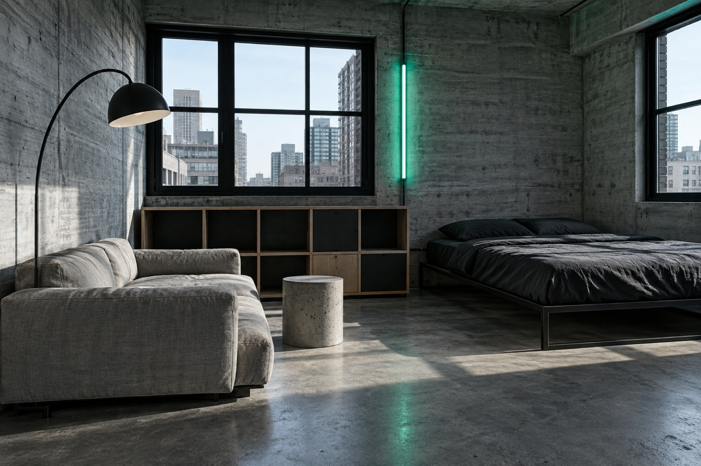

設計 Guideline
NestCraft 街頭機能風的色彩、字級、間距、框線與元件規範。頁面上的數值都對應 scss/ 裡的 token 與共用 class，改 token 時兩邊一起改。
概覽
像機能服飾的吊牌、工業設備的銘牌：先把規格講清楚，再談氣氛。水泥灰打底、深炭畫框寫字，螢光青綠只標出最重要的那一處。
- 風格定位
- 街頭機能風
- 色系搭配
- 高對比＋冷螢光（水泥灰、深炭、螢光青綠）
- UI 視覺特點
-
購物車採用粗黑外框與粗體標籤，按鈕反差極大，適合潮流選品與球鞋電商。
- 品牌
- 專為租屋族與小資家庭設計的模組化家居電商，主打「靈活收納、小坪數友善」。
以上文字引用自課程規格文件（Notion）。

設計原則
規格先於形容詞
尺寸寫成 W／D／H 銘牌、價格用窄體數字、每件商品都有編號。先給數字，形容詞放後面。
NC-1001
- W
- 160
- D
- 80
- H
- 75
標籤取代裝飾
現貨、剩幾件、已售完、免工具：用粗框標籤直接說出狀態，不加插圖、漸層或 emoji。每張商品卡最多兩個標籤。
現貨
剩 5 件
已售完
免工具
框線分區
區塊用 2px／3px 深炭框線或底色切開，版面可以比留白風格更密。相鄰的框共用一條線，不疊成 4px。
- 全館滿 NT$ 3,000 免運
- 現貨 48 小時內出貨
- 14 天租屋友善退換
- 90% 商品免工具組裝
色彩
數值來源：_variables.scss 1. 色彩
大面積只用水泥灰階與深炭；螢光青綠只標重點；警示橘、訊號紅、訊號藍只出現在標籤、提示與錯誤。
對比度依 WCAG 2.x 相對亮度公式計算。文字需達 4.5:1（AA，7:1 為 AAA）；框線、焦點環等非文字元素需達 3:1。「對水泥灰」是對頁面底色 $concrete 的比值。
水泥灰階：底色與面板
四階明度很接近，分區靠框線，不靠色差。商品照的背景就是中水泥，圖片與面板接得起來。
淺水泥
$concrete-light #F2F2EE
卡片、輸入框、下拉選單、淺色面板。深色區塊的文字 $on-dark 也是這個顏色。
- 上面的深炭字
- 15.0:1AAA
水泥灰
$concrete #E3E3DF
頁面底色 $body-bg、頁首底色。
- 上面的深炭字
- 13.1:1AAA
- 上面的深水泥字
- 5.6:1AA
中水泥
$concrete-mid #CFCFCB
商品圖底、次要面板、停用的輸入框與分頁（$body-secondary-bg）。
- 上面的深炭字
- 10.8:1AAA
- 上面的深水泥字
- 4.6:1AA
- 上面的深青綠、訊號色字
- 4.0–4.2不可
鋼灰
$steel #8A8B87
裝飾細線、停用狀態的框線（停用元件不需 3:1）。
- 對水泥灰
- 2.7:1不作文字
深炭：文字、框線與深色區塊
全站的框線、主要按鈕、硬陰影都是同一個深炭，不用純黑。次要文字用深水泥，不用把深炭調淡。
深炭
$charcoal #1C1D1F
主文字、所有 2px／3px 框線、主要按鈕、深色區塊、硬陰影（$primary、$dark）。
- 對水泥灰
- 13.1:1AAA
- 對淺水泥
- 15.0:1AAA
- 對中水泥
- 10.8:1AAA
淺炭
$charcoal-soft #2C2D30
深色區塊裡的面板與分隔線、頁尾的巨大品牌字。
- 對深炭
- 1.2:1不作文字
深水泥
$concrete-dark #575854
次要文字、說明、placeholder、麵包屑連結、銘牌的 W／D／H（$secondary）。
- 對水泥灰
- 5.6:1AA
- 對淺水泥
- 6.4:1AA
- 對中水泥
- 4.6:1AA
螢光青綠：只標重點
螢光青綠
$neon #2EF2B3
底色：目前狀態、hover 反轉、.tag-neon（現貨）、.btn-neon。文字：只放在深炭上。
- 在深炭上
- 11.6:1AAA
- 對水泥灰／淺水泥
- 1.1／1.3禁止
深青綠
$neon-deep #006B4B
淺底上的強調文字、連結 hover、驗證通過、<code>（$success）。
- 對水泥灰
- 5.1:1AA
- 對淺水泥
- 5.8:1AA
- 對中水泥
- 4.2:1不可
訊號色：狀態與提示
像工地的警示漆，只在需要注意的地方出現。警示橘太亮，只當底色；淺底上的提醒文字改用深警示橘。
警示橘
$safety #FF6A13
底色：.tag-safety（剩 N 件）、待付款（$warning）。
- 上面的深炭字
- 5.9:1AA
- 對水泥灰
- 2.2:1不作文字
深警示橘
$safety-deep #A64000
淺底上的提醒文字，例如付款期限。
- 對水泥灰
- 4.9:1AA
- 對淺水泥
- 5.6:1AA
訊號紅
$signal #B42318
錯誤、刪除、.is-invalid（$danger）。
- 對水泥灰
- 5.1:1AA
- 對淺水泥
- 5.9:1AA
訊號藍
$signal-blue #2451D6
資訊提示、配送說明（$info）。
- 對水泥灰
- 5.1:1AA
- 對淺水泥
- 5.8:1AA
深色區塊的文字與元件
.section-dark 與頁尾是深炭底，標題與文字自動反白，焦點外框改成螢光。
深色區塊主文字
$on-dark = $concrete-light
深色區塊的標題與內文。
- 對深炭
- 15.0:1AAA
深色區塊次要文字
$on-dark-muted #A3A4A0
深色區塊的說明、頁尾的次要連結。
- 對深炭
- 6.7:1AA
- 對水泥灰
- 2.0:1只用在深炭上
深炭條加 .on-dark：狀態標籤補上看得見的框
.btn-text放進.section-dark自動改成淺色字與淺色底線，hover 一樣是 4px 螢光底線，不用另外寫顏色。- 深色區塊裡的淺色面板：下拉小卡
.dropdown-menu（例如首頁情境圖的熱點）自動恢復淺底的配色；其他淺色小卡（例如首頁情境分頁的「這個情境的家具」清單）加.surface-light。兩者的標題 h1–h6、內文、連結、.text-note、.btn-text都改回深炭與深水泥，焦點框改回深炭。 .surface-light只管文字與焦點，不上底色；淺水泥底由面板自己的 class 設定（例如.home-room-set）。- 不在
.section-dark裡的深炭條（例如我的訂單的訂單標頭）加.on-dark：「已完成」補上螢光框、「已取消」改淡鋼灰虛線，兩種標籤在深炭上都看得見。
文字與底色的組合
設計時直接查這張表。左邊的樣本就是實際的前景色與底色。
- 深炭／水泥灰 13.1:1AAA 內文、標題
- 深水泥／水泥灰 5.6:1AA 次要文字、說明
-
螢光／深炭
11.6:1AAA
主要按鈕、
.tag-dark、跑馬燈、訂單摘要標題 -
深炭／螢光
11.6:1AAA
hover 反轉、
.tag-neon、導覽目前頁 -
深炭／警示橘
5.9:1AA
.tag-safety、待付款 - 深青綠／淺水泥 5.8:1AA 驗證通過、連結 hover
- 淡鋼灰／深炭 6.7:1AA 深色區塊的次要文字
- 螢光／水泥灰 1.1:1禁止 任何文字都不行，連大標題也不行
-
警示橘／水泥灰
2.2:1禁止
改用深警示橘
$safety-deep（4.9:1） - 深青綠／中水泥 4.2:1不可 中水泥上只放深炭或深水泥字；訊號紅、訊號藍、深警示橘同樣不到 4.5:1
Bootstrap theme color 對應
在 $theme-colors 改寫，所以 .btn-*、.text-*、.bg-* 都會換成這組顏色；.alert-* 另外改成淺水泥底、深炭框與深炭字，只有左側圖示格用狀態色（見「提示訊息」）。按鈕與標籤上的字色由 Bootstrap 依底色自動挑選，改成色票內的淺水泥與深炭。
| Theme | 對應變數 | 用途 |
|---|---|---|
primary$charcoal |
$charcoal |
主要按鈕（_base.scss 改為深炭底螢光字）、核取方塊已選、分頁目前頁 |
secondary$concrete-dark |
$concrete-dark |
次要文字 .text-secondary |
success$neon-deep |
$neon-deep |
驗證通過、付款完成 |
info$signal-blue |
$signal-blue |
資訊提示 |
warning$safety |
$safety |
提醒的底色；文字改用 $safety-deep |
danger$signal |
$signal |
錯誤、刪除 |
light$concrete-light |
$concrete-light |
淺色面板 .bg-light |
dark$charcoal |
$charcoal |
深色底；整個區塊請用 .section-dark，文字與焦點會一起反白 |
neon$neon |
$neon |
自訂：.btn-neon、.bg-neon、.text-bg-neon。.text-neon 只能用在深炭上 |
語意變數
$body-bg$concrete$body-color$charcoal$body-secondary-color$concrete-dark$body-secondary-bg$concrete-mid$body-tertiary-bg$concrete-light$border-color$charcoal$link-color$charcoal$link-hover-color$neon-deep$code-color$neon-deep$input-bg$concrete-light$input-placeholder-color$concrete-dark$input-disabled-bg$concrete-mid$form-feedback-valid-color$neon-deep$form-feedback-invalid-color$signal$color-contrast-light$concrete-light$color-contrast-dark$charcoal
字級
數值來源：_variables.scss 2. 字體與字級
層級靠字重與尺寸拉開：標題一律 900、行高 1.25。英數用 Archivo，價格、編號、尺寸改成 75% 窄體。
字體家族
Archivo
英數：價格、尺寸、編號、品牌字 NESTCRAFT。從 Google Fonts 載入可變字體，寬度 62–125%、字重 400–900。
Noto Sans TC
中文：Archivo 沒有的字元自動落到這套字體。標題 900，按鈕與標籤 700–900，內文 400。
$font-family-base："Archivo", "Noto Sans TC", "PingFang TC", "Microsoft JhengHei", system-ui, sans-serif
窄體數字
加上 .num 或 .price：Archivo 改為 font-stretch: 75%（$font-stretch-condensed）並使用等寬數字 tabular-nums。同樣的字數約省下四分之一寬度，手機 2 欄商品卡也放得下完整價格與三格銘牌。
一般寬度 100%
窄體 75%：.num、.price、.spec-plate
字級表
表列 1440px 與 390px 的實際字級。超過 20px 的字級在 1200px 以下由 Bootstrap RFS 依視窗寬度自動縮小。字距：標題 .01em、內文 .02em、按鈕與標籤 .06em。
.display-1～.display-6
首頁主視覺、大數字等少數位置。一頁至多一處。
h1
頁面標題，每頁一個，放在 .page-header。
h2
區塊標題 .section-heading。
h3
子區塊、卡片群組。
h4
表單群組、狀態示意標題 .demo-state-title。
h5／h6
清單項目、面板內的小標。
.lead
首頁主視覺的說明。其他頁首用 .page-lead（內文字級、深水泥、最寬 38em）。
內文 body
商品介紹、段落。
small／.text-note
註記、表單說明。.text-note 另外改為深水泥。
功能字
標籤、價格、銘牌、按鈕都有固定的字級與字重，各頁不要另外調整。
-
.price窄體 800；商品卡 24px、摘要總額 28pxNT$ 16,800 -
.price-lg32px、行高 1；商品詳情NT$ 16,800 -
.tag12px／900、字距 .06em現貨 -
.spec-plate數值 15px／800；W／D／H 與 cm 11px／700- W
- 160
- D
- 80
- H
- 75
-
.btn16px／700、字距 .06em；.btn-sm14px、.btn-lg18px加入購物車 -
.form-label14px／700收件人姓名 -
品牌字窄體 900、22px（
.site-brand-name）NESTCRAFT
數字與編號
金額一律寫成 NT$ 12,345；金額欄靠右對齊，等寬數字讓位數上下對齊。
- 商品編號
- NC-1001～NC-1010
- 訂單編號
- NC-20260923-001
- 日期
- 2026-09-23
- 電話
- 0912 345 678
- 橡木餐桌
- NT$ 16,800
- NestBox 自由拼裝
收納方塊 (三入組) × 2 - NT$ 2,560
- SlimFit 夾縫
多功能推車 - NT$ 890
- 小計
- NT$ 20,250
品名與標題的換行
標題已設定 text-wrap: balance；p、li、dd、label 用 text-wrap: pretty。品名另外要求：不從詞中間拆開。
懸浮感
日暮亞麻｜
.text-phrase：只在空白與 <wbr> 換行懸浮感
日暮亞麻｜
虛線是欄寬邊界，示範欄寬 10rem，約等於手機 2 欄商品卡的標題寬度。
- 斷點寫在 HTML：長品名在詞組之間插入
<wbr>，例如「自由拼裝<wbr>收納方塊」「懸浮感<wbr>洞洞板<wbr>壁面收納組 (免釘牆)」。畫面上看不到，文案仍然逐字。 .text-phrase（word-break: keep-all＋overflow-wrap: anywhere）只在空白與<wbr>換行；單一詞組比欄寬還長時才強制斷開。- 商品卡標題
.product-card-title已內建同樣規則。商品詳情 h1、購物車品項、訂單摘要等其他地方的品名，要自己加.text-phrase。 - 不要用在長段落：中文只剩空白與標點可以換行，窄欄會留下大段空白。
- 英文全大寫只用在品牌字 NESTCRAFT 與 NC-1001 這類代碼；標題上方不放英文眉標。
間距
數值來源：_variables.scss 3. 間距
以 1rem = 16px 為基準，spacer 共 0–7 階，p-*、m-*、gap-* 都能用。版面比留白風格密：區塊之間靠框線切開，不靠加大留白。
Spacer
- 0 0 相鄰的框共用一條線、圖片貼齊框線
- 1 4px .25rem 圖示與文字、限定詞與銘牌
- 2 8px .5rem h1 與說明、區塊標題與說明、並排的標籤與按鈕
- 3 16px 1rem 表單欄位之間、段落、空狀態的說明與按鈕
- 4 24px 1.5rem 格線 gutter、頁首上下內距、區塊標題與內容（手機）
- 5 48px 3rem 頁首與內容、區塊標題與內容（992px 以上）、空狀態上下
- 6 64px 4rem 區塊上下（手機）、頁尾上方（手機）、狀態示意上方
- 7 96px 6rem 區塊上下與頁尾上方（992px 以上）
頁首節奏
首頁以外的每一頁，頁首都用 .page-header 包住麵包屑（或結帳步驟）、h1 與一句 .page-lead，換頁時標題停在同一個位置。各頁不要另外設定頁首間距。
網站頁首 71–73px
24
麵包屑或結帳步驟 44
24
頁面標題 h1
8
.page-lead 一句說明
24＋3
48
第一個內容區塊
- 網站頁首 → 麵包屑
- 24px，992px 以上 48px
- 麵包屑或步驟 → h1
- 24px
- h1 → 說明
- 8px；
.page-lead深水泥、最寬 38em - 說明 → 粗線 → 內容
- 下內距 24px＋3px 深炭線，再空 48px
- 麵包屑
aria-label="目前位置"；最後一項是目前頁，加.active與aria-current="page"，不做成連結。連結已內建 44px 觸控高度。- 結帳流程
- 購物車、結帳、付款結果以
.checkout-steps取代麵包屑，放在 h1 之前。
版面與元件
.section- 上下 64px（spacer 6），992px 以上 96px（spacer 7）
.section-heading- 標題與說明 8px；與內容 24px，992px 以上 48px
- 格線 gutter
- 24px（
$grid-gutter-width: 1.5rem）；商品列表等密集區可用.g-3收緊 - 容器左右內距
- 各 20px（
$container-padding-x: 2.5rem，左右各取一半）；需 ≥ gutter，.row才不會溢出 - 卡片內距
.card20px（$card-spacer-x／y）；.order-summary-body20px；.product-card-body上 14px、左右下 12px- 網站頁首高度
- 73px（
$site-header-height: 4.5625rem，實測 71–72.5px）：上下 12px、44px 圖示按鈕與 3px 底線，不含上方跑馬燈 - sticky 位移
- 89px（
$sticky-top-offset＝頁首＋16px）。側欄、訂單摘要、本頁目錄等 sticky 元素的top，以及 html 的scroll-padding-top都用這個值 .flush-footer- 頁尾上方固定空 64px（992px 以上 96px）。
main的最後一個區塊是滿版照片時（例如首頁最後的 CTA），在那個區塊加.flush-footer，頁尾直接接在照片下方；不要用負 margin 硬貼。 - 觸控目標
- 至少 44 × 44px，看起來小的元件用
min-height、min-width或內距補足，不放大字級
框線、直角與陰影
數值來源：_variables.scss 4. 邊框、圓角、陰影
全站直角、2px 深炭框、硬陰影不模糊。形狀越硬，數字與標籤越清楚。
框線
2px 深炭 $border-width
預設：按鈕、輸入框、卡片、標籤、銘牌、商品卡、結帳步驟、數量框、分頁、表格。
3px 深炭 $frame-width
重點框：頁首底線、.page-header 底線、.section-rule、訂單摘要、Modal、Offcanvas、總額上方、分頁籤目前頁。
2px 虛線
「不是正式畫面」或「已失效」：.demo-state、.demo-state-stage，以及深水泥虛線的已取消 .badge-status.is-cancel。
2px 鋼灰 $steel
停用：輸入框、分頁、售完的數量框。停用元件不需要 3:1。
- 框線只用深炭，不用灰色髮絲線分層；要弱一點的分區，改用底色（淺水泥／中水泥）。
- 相鄰的框共用一條線：只畫一側（
li + li { border-left }），或相鄰元素用 -2px 負邊距疊合（分頁.page-item已內建）。兩個 2px 框直接貼在一起會變成 4px，看起來像錯誤。 .border工具類別就是 2px 深炭；.border-3等於$frame-width。
直角
$border-radius 0
.rounded-pill
$enable-rounded: false，$border-radius到$border-radius-xxl全部是 0：按鈕、輸入框、卡片、Modal、下拉選單都是直角。- 唯一例外是
$border-radius-pill（50rem），只給圓形標記，例如情境圖的熱點。購物車數量徽章也是直角。 - 開關
.form-switch也是方形：$form-switch-border-radius: 0，滑塊換成方塊圖（$form-switch-*），見「表單」。
硬陰影
不模糊、往右下位移，像貼紙或金屬銘牌。$enable-shadows: false，Bootstrap 元件不會自動加陰影；下拉選單、Modal、主要按鈕、訂單摘要已在共用樣式設定好。
$shadow-hard-sm
2px 2px 0 $charcoal
小元件：商品詳情縮圖的目前項、結帳選項卡 hover。
$shadow-hard
4px 4px 0 $charcoal
主要按鈕、訂單摘要、下拉選單、商品卡 hover。
$box-shadow-lg
6px 6px 0 $charcoal
Modal 等最上層的浮層。
- 只給主要按鈕與重點面板。一般卡片靜止時不加陰影，商品卡 hover 時才往左上浮起 2px 並出現 4px 陰影；結帳選項卡較小，hover 同樣浮起 2px，陰影用 2px。
- 主要按鈕像實體按鍵：hover 往左上 1px、陰影 5px；按下往右下 3px、陰影剩 1px；停用時沒有陰影。
- 不用模糊陰影、彩色陰影、螢光光暈，也不和圓角一起出現。
鍵盤焦點
只在鍵盤操作時出現（:focus-visible）。淺底靠深炭外圈（13.1:1）、深底靠螢光（11.6:1），兩種底色都看得見。按鈕聚焦時，Bootstrap 會同時套用 hover 配色，再加上雙環。
雙環 $focus-ring-double
0 0 0 3px $neon, 0 0 0 5px $charcoal
按鈕（同時換成 hover 配色）、輸入框、下拉選單、核取方塊、單選、開關、分頁。
外框 :focus-visible
outline 3px $charcoal, offset 2px
連結與其他元素。頁首的漢堡選單按鈕另外補回這組外框。
深色區塊
outline 3px $neon
.section-dark 與頁尾自動改為螢光外框。
內側雙環
inset 3px $neon, inset 5px $charcoal
.nav-underline、.nav-tabs 與本頁目錄畫在內側，不會被橫向捲動的容器裁掉；連結左右留 8px，雙環不壓字。數量框的輸入欄用 3px 螢光內框。
- 錯誤欄位聚焦時，Bootstrap 的驗證樣式改用 3px 訊號紅實線環，見下方「表單」。
- 關閉鈕
.btn-close用單環：淺底是 3px 深炭環，深炭標題條上的.btn-close-white是 3px 螢光環，見下方「按鈕」。 - 不被頁首擋住：html 設定
scroll-padding-top: $sticky-top-offset，Tab 到頁面上方的元素時會停在 sticky 頁首下方。 - 程式移入焦點的目標（
[tabindex="-1"]，例如跳至主要內容的<main>）不畫外框。
元件狀態
數值來源：_base.scss、components/
下面都是正式的 class 與 markup，直接複製就能用。滑過、按下、鍵盤焦點用 .gl-is-hover、.gl-is-active、.gl-is-focus 強制呈現（只在本頁使用），讀的是同一組 Bootstrap 變數。按鈕的鍵盤焦點和 Bootstrap 的 .btn:focus-visible 一樣：hover 配色（--bs-btn-hover-*）加上雙環（--bs-btn-focus-box-shadow）。
按鈕
.btn-primary
主要動作：深炭底螢光字＋硬陰影，hover 反轉成螢光底。同一組動作（一個表單、一個面板、一張卡片）只放一個。
預設
滑過 hover
按下 active
鍵盤焦點 focus
停用 disabled
.btn-outline-primary
次要動作：淺水泥底＋深炭框，hover 變深炭底螢光字。商品卡的「加入購物車」、表單內的單一送出（例如折扣碼「套用」）。
預設
滑過 hover
按下 active
鍵盤焦點 focus
停用 disabled
.btn-text
文字連結型：繼續購物、返回購物車、移除。2px 底線，hover 變 4px 螢光底線；已內建 44px 觸控高度，不要再加 py-*。
預設
滑過 hover
按下 active
鍵盤焦點 focus
停用 disabled
.btn-neon／.btn-outline-light
深色區塊（.section-dark）專用。.btn-neon 是深色區塊的主要動作，hover 變成深炭底螢光框，鍵盤焦點再加上螢光內環，看起來是一圈加粗的螢光框；.btn-outline-light 是次要動作，hover 變螢光底。
預設
滑過 hover
鍵盤焦點 focus
預設
滑過 hover
.btn-close／.btn-close-white
Modal、Offcanvas 的關閉鈕一律用 Bootstrap 的 .btn-close，不自己畫。含 2px 透明框共 44 × 44px，× 圖 16px。本專案的 Modal、Offcanvas 標題條都是深炭，所以實際頁面用的是 .btn-close-white。
淺底：預設
滑過：螢光底＋深炭框
焦點：3px 深炭環
深炭條：淺水泥 ×
滑過：2px 螢光框
焦點：3px 螢光環
標題列：登入頁「重設密碼」Modal（.auth-modal）
- 淺底
.btn-close：深色 ×，透明底；hover 變螢光底＋2px 深炭框；焦點是 Bootstrap 的--bs-btn-close-focus-shadow（3px 深炭環）。 - 深炭條
.btn-close-white：直接換成淺水泥色的 × 圖，不用 Bootstrap 的invert濾鏡（濾鏡會把 hover 的螢光框一起轉成灰色）；hover 只出現 2px 螢光框、底色維持深炭；鍵盤焦點（:focus-visible）是 3px 螢光環。 - 放在
.modal-header、.offcanvas-header時，_base.scss取消 Bootstrap 給關閉鈕的內距與負 margin，只留margin-left: auto靠右，44px 不會被撐大或突出標題條。標題條的內距由頁面設定：重設密碼 Modal 上右下 12px、左 20px（高 68px）；商品一覽的篩選 Offcanvas 上右下 4px、左 20px（高 52px）。 - 一定要寫
aria-label：重設密碼 Modal 寫「關閉」；商品一覽的篩選 Offcanvas 寫「關閉篩選條件」。
尺寸
.btn-sm 高 44px
預設 高 55px
.btn-lg 高 67px
圖示在文字左側，間距自動 8px
- 內距：
.btn-sm8／16px、預設 12／24px、.btn-lg16／32px；框線 2px。三種尺寸都達到 44px 觸控目標。 .btn-sm用在商品卡、列表等密集區域，與相鄰按鈕保持 8px 以上間距。硬陰影會往右下多佔 4px，並排時要留位置。- 停用：透明度 .45（
$btn-disabled-opacity），主要按鈕改深水泥底並拿掉陰影。停用狀態不需要符合對比度。 - 按鈕文字寫動作，不加「→」。只有購物車、閃電結帳這類有明確意義的圖示才放在文字左側。
- 圖示直接寫在文字前面：
<i class="bi bi-bag" aria-hidden="true"></i>加入購物車。.btn:has(> .bi)會固定圖示與文字的間距 8px（.btn-text6px），不要再加me-2、gap-*或空白。
表單
每個欄位都有看得見的標籤；說明與錯誤訊息用 aria-describedby 連到欄位。輸入框 2px 深炭框、淺水泥底、高 53px；placeholder 用深水泥（對淺水泥 6.4:1），只寫範例格式，不取代標籤。
預設 default
焦點 focus
出貨前會用這支電話和你約配送時間。
通過 is-valid
格式正確，訂單確認信會寄到這裡。
錯誤 is-invalid
手機號碼需要 10 碼數字，例如 0912 345 678。
錯誤＋焦點
卡號需要 16 碼，目前少了 4 碼。
停用 disabled
目前只配送台灣本島。
下拉選單 select
多行文字＋選填
需要搬運大型家具時，可以註明樓層與有無電梯。
送出處理中 loading
檢查通過、送出付款後，
- 標籤 14px／700，與輸入框相距 6px。說明
.form-text與驗證訊息 13px。 - 焦點：框線維持深炭，外加雙環
$input-focus-box-shadow。通過改深青綠框與打勾圖示；錯誤改訊號紅框與驚嘆號圖示，錯誤欄位聚焦時是 3px 訊號紅實線環。 - 停用：中水泥底、鋼灰框。核取方塊與單選 20px、2px 深炭框，選中時深炭底；點擊範圍包含整個標籤。
- 開關
.form-switch：方形滑塊（_variables.scss的$form-switch-*），寬 40px、高 20px、2px 深炭框。關閉＝淺水泥底＋左側深炭方塊；開啟＝深炭底＋右側螢光方塊；焦點雙環；停用半透明。markup：div.form-check.form-switch包input.form-check-input[type="checkbox"][role="switch"]與 label。 - 開關只用在「切換後立即生效」的設定，例如商品一覽篩選的「只顯示有現貨的商品」；要按送出才算數的選項（同意條款、記住我）用核取方塊。
- 選填：標籤文字後加
span.form-label-optional，只寫「選填」。必填不加星號，改在表單開頭說明「除了標示『選填』的欄位，其他都需要填寫」。 - 錯誤訊息說明怎麼修正，例如「手機號碼需要 10 碼數字，例如 0912 345 678」，不寫「格式錯誤」。核取方塊的錯誤訊息放在同一個
.form-check裡、標籤之後，框與標籤一起變訊號紅。 - 送出處理中：按鈕加
disabled，文字前放span.spinner-border.spinner-border-sm[aria-hidden="true"]，文字包span[role="status"]。共用樣式.btn:disabled:has(> .spinner-border)讓按鈕維持不透明（一般停用是 .45），spinner 與文字間距自動 8px，不用再加me-2。 - 結帳頁底的「設計稿狀態示意」有兩個送出後的畫面：必填錯誤（表單最上方一則
.alert-danger寫出還有幾個欄位要處理，欄位加.is-invalid、aria-invalid並在下方寫原因）與付款處理中（上方的 loading 按鈕）。 - 設計稿的結帳表單沒有送出按鈕：「確認付款」是連到
order-result.html的連結，在欄位裡按 Enter 不會送出，填寫內容也不會出現在網址。姓名、電話、Email、地址、備註與卡號欄位只保留autocomplete、不加name（配送、付款的 radio 保留name才能互斥）。正式串接時改成method="post"、補上name，「確認付款」改回button[type="submit"]，卡號交給金流商的付款頁。
選項卡 .co-option：結帳的配送與付款方式
選項需要說明文字或費用時，用整張可點的卡片取代一般單選：label.co-option 包住 radio，點卡片任何位置都能選。樣式在 _checkout.scss，是結帳頁的頁面元件，下方直接套用同一組 class。
- 鍵盤焦點畫在整張卡上（雙環），radio 本身不再畫焦點；選中與未選中都看得見。
- 停用的選項不隱藏：保留在原位並寫出原因，例如大型家具不能超商取貨。
- 費用寫在標題右側：
免運、+NT$ 800、不適用。
數量、庫存標籤與訂單狀態
數量增減 .qty
外框 2px 深炭，加減鍵各 44 × 44px、hover 螢光底；數字用 Archivo 800 等寬。
一般
減號 hover、數字焦點
已售完：整組停用，外框改鋼灰
標籤 .tag
12px／900、2px 深炭框。庫存標籤依件數自動決定，每張商品卡最多兩個標籤，庫存標籤放第一個。
- 現貨
.tag-neon：庫存 10 件以上- 剩 5 件
.tag-safety：1–9 件，寫出實際數量- 已售完
.tag-dark：0 件，按鈕同時停用- 免工具
.tag：功能標籤，例如免工具、免釘牆
訂單狀態 .badge-status
和 .tag 同一個外形，用底色區分；已取消改成深水泥虛線框，表示「已失效」。配送進度沿用同一組用語：已付款 → 備貨中 → 出貨中 → 已完成（「備貨中」只是進度節點，不是訂單狀態）。
- 待付款訂單已成立，尚未收到款項；同時寫出付款期限
- 已付款已收到款項，正在備貨
- 出貨中已交給物流，大型家具會先來電
- 已完成已送達並簽收
- 已取消訂單已取消，不會扣款；同時寫出取消日期
規格銘牌 .spec-plate＋限定詞 .spec-note
所有尺寸都用銘牌呈現：W／D／H 三格，單位 cm 由樣式自動加在最後。價格與尺寸對應的數量不同時，把限定詞放在銘牌上方。
一般：橡木餐桌
- W
- 160
- D
- 80
- H
- 75
價格是三入組：NestBox
單入- W
- 35
- D
- 35
- H
- 35
兩種模式：日暮亞麻沙發床
沙發模式- W
- 150
- D
- 85
- H
- 80
- W
- 150
- D
- 190
- H
- 40
組合商品：洞洞板
單片底板- W
- 60
- D
- 2
- H
- 60
- markup：
<dl class="spec-plate"><div><dt>W</dt><dd>160</dd></div>…</dl>。數字只寫數值，不寫 cm。 - 限定詞只有三種：單入（NestBox）、沙發模式／床鋪模式（沙發床）、單片底板（洞洞板）。沒有限定詞的商品不放
.spec-note。 - 商品卡內的銘牌自動撐滿卡寬、三格平分；卡片窄於 12rem 時數字縮小，窄於 10rem（360px 手機的 2 欄）再收緊格距，不會超出卡片。
- 商品卡的限定詞直接放在
.product-card-body裡、銘牌前面，會自動緊貼銘牌；不要再包一層div。 - 商品詳情「規格」表的「尺寸」列，直接寫 Notion 原文，例如「W60 × D2 × H60 cm (單片底板)」。
導覽
三種橫向切換列，依「切換的是什麼」選用：
- 切換同一頁下方的內容面板（商品詳情的「商品詳情／規格／評價」）→ 方塊分頁籤
.nav-tabs。 - 換到另一個列表網址（商品一覽的分類）→ 分類標籤
.products-chip，是連結。 - 只改變目前列表的篩選條件（我的訂單的狀態）與本頁的手機目錄 → 底線分頁
.nav-underline。
.nav-tabs 方塊分頁籤：切換內容
面板內容（示意）：切換分頁籤只換這一塊，頁面不重新載入。
面板內容（示意）：規格表。
面板內容（示意）：3 則評價。
狀態
- 2px 深炭框、相鄰格共用一條線；目前項深炭底螢光字，其他項淺水泥底，hover 螢光底，鍵盤焦點是內側雙環。高至少 44px。
- markup 用 Bootstrap 的 tab：
ul.nav.nav-tabs[role="tablist"]、button[role="tab"][data-bs-toggle="tab"]與aria-selected，面板是.tab-pane[role="tabpanel"]。方向鍵切換由 Bootstrap 處理，js/main.js會把選到的分頁捲進畫面。
.products-chip 分類標籤：換到另一個列表
- 商品一覽在 992px 以下的分類列（桌機改用左側篩選面板）。樣式在
_products.scss，是頁面元件；其他頁需要時再搬到_base.scss共用。 - 獨立的方塊、8px 間距；目前分類深炭底螢光字並加
aria-current="page"，hover 螢光底；數量用窄體數字接在文字後，不加括號。放不下時橫向捲動，手機貼齊螢幕兩側。
.nav-underline 底線分頁：篩選目前的列表
狀態
- 目前項目：3px 深炭底線＋字重 900；其他項目深水泥 700，hover 變深炭並出現底線。整列有 2px 深炭底線。
- 篩選用 button 加
aria-pressed，如上方示範（我的訂單）；本頁手機目錄是錨點連結，目前章節由 ScrollSpy 標示。 - 高度 54px、最小寬 44px，連結左右各 8px 內距、項目間距 8px，相鄰兩個字之間約 24px。Bootstrap 把
.nav-underline連結的左右內距寫死成 0，_base.scss用padding-inline: var(--bs-nav-link-padding-x)補回，內側雙環才不會壓到字。 - 放不下時橫向捲動，手機加
.bleed-x貼齊螢幕兩側；數量用span.tab-count接在文字後，不加括號。本頁手機目錄在 768–991px 收成左右 6px、間距 0，9 個章節一列放得下。
會員中心選單：Bootstrap list group
- 我的訂單的左欄選單（我的訂單、個人資料、收件地址）是頁面之間的導覽，用
nav包.list-group.list-group-flush（樣式.orders-menu，在_orders.scss用--bs-list-group-*換色）：沒有外框，只有項目之間的 2px 深炭分隔線，每項高 48px、圖示在文字左側。 - 目前頁加
.active與aria-current="page"：螢光底＋深炭字、字重 900（上方緊接深炭的會員牌，所以不用全域的深炭 active）。尚未設計的頁面用不帶href的佔位連結，也不加.list-group-item-action（沒有 hover）。 - 排列：576px 以下直排；576–991px 三格橫排、分隔改直線；992px 以上回到左欄直排並跟著會員中心 sticky。「登出」是動作不是導覽，放在選單外的
.btn-text。
.breadcrumb
分隔符號「/」；連結深水泥 700、高 44px；每一項不斷行，放不下時整項換到下一行。商品詳情的最後一項用簡短品名。
.pagination
每格高 47px、最小寬 44px，數字窄體粗體置中；相鄰格共用框線。目前頁深炭底螢光字，「2」示範 hover 的螢光底，「3」示範鍵盤焦點的雙環；停用為中水泥底、鋼灰框。箭頭與頁碼用 .visually-hidden 補上「上一頁」「第 N 頁」。
提示訊息 .alert
淺水泥底、2px 深炭框、深炭字；左側圖示格依狀態上色：成功＝螢光、資訊＝訊號藍、提醒＝警示橘、錯誤＝訊號紅，錯誤的標題也改訊號紅（對淺水泥 5.9:1）。登入失敗、結帳必填、付款未完成、付款期限等頁面提示都用這一套，不另外做頁面版本。
成功 .alert-success
付款完成
訂單 NC-20260923-001 已成立，確認信已寄到你的信箱。
資訊 .alert-info
大型家具採預約配送
出貨前客服會先來電，和你確認送達時間與搬運動線。
提醒 .alert-warning：付款未完成（同付款結果頁）
發卡銀行沒有核准這筆交易
應付金額尚未扣款，購物車與收件資料都還保留著。確認卡片額度後重新付款，或改用 ATM 轉帳、貨到付款。
錯誤 .alert-danger：填寫的內容要修正
卡號格式不正確
卡號需要 16 碼數字，目前只有 12 碼。修正標示紅框的欄位後，再按一次「確認付款」。
- 錯誤
.alert-danger：使用者可以自己修正的問題，例如卡號格式不正確、登入的 Email 或密碼不正確（login.html）、結帳還有必填欄位沒填好（checkout.html的狀態示意）。 - 提醒
.alert-warning：事情還沒完成、需要再做一步，但不是使用者填錯。「付款未完成」屬於提醒：沒有扣款、可以重試或換付款方式，與付款結果頁（order-result.html）的警示橘標記同色，不用錯誤紅。我的訂單的付款期限（orders.html）也是提醒；只有一句話時可以省略.alert-title。 - 圖示全站固定四個方形填色圖示，不換別的：成功
bi-check-square-fill、資訊bi-info-square-fill、提醒bi-exclamation-square-fill、錯誤bi-x-square-fill。 - markup：
<div class="alert alert-danger" role="alert"><i class="bi bi-x-square-fill" aria-hidden="true"></i><div><p class="alert-title">標題</p><p class="mb-0">說明</p></div></div>。第一個子元素是.bi圖示時，自動排成左側圖示格＋右側文字。 - 送出後才出現的錯誤（例如登入失敗）加
role="alert"，螢幕閱讀器會立刻念出；頁面一打開就在的說明不加。上方示範、各頁底部的狀態示意都是靜態畫面，所以沒有加。 - 先說結果，再說下一步。不用驚嘆號、不責怪使用者、不放錯誤代碼。
商品卡 .product-card
上方深炭編號條（商品編號＋分類，淺色字，不用螢光）、1:1 商品圖＋標籤、品名、規格銘牌、價格與滿版按鈕。整張卡可點（品名連結延伸到卡片範圍），hover 時浮起並出現硬陰影。
一般：庫存 12 件
低庫存：1–9 件

已售完：0 件

首頁人氣嚴選：閃電結帳

- 一般與低庫存：
.btn-outline-primary「加入購物車」。已售完：按鈕停用並改寫「已售完」，標籤改.tag-dark。 - 閃電結帳只用在首頁人氣嚴選：按鈕改為
.btn-primary，直接前往結帳。每張卡只有這一個動作，所以一列四張卡各有一顆主要按鈕。 - 卡片依自身寬度調整（container query）：窄於 12rem 時銘牌數字與價格縮小；窄於 10rem（360px 手機的 2 欄）再收緊銘牌格距。手機 2 欄、以及上方 1400px 以下的示範，看到的就是窄卡。
- 品名會吃掉多出來的高度（
flex-grow），同一列卡片的品名長短不同時，銘牌與價格仍然對齊。 - 所有商品卡都連到
product.html；圖片的 alt 留空，品名就是連結文字。
情境圖熱點 .home-spot
首頁「靈感提案」的情境照上，每件家具有一個螢光圓點，點開是 Bootstrap dropdown 小卡：編號、品名、規格銘牌、價格與兩個動作。樣式在 _home.scss，是首頁的頁面元件，下方直接套用同一組 class（點圓點可以打開小卡）。


NC-1004
極簡床頭櫃
- 位置：每個熱點一個 class，例如
.home-spot-a-nightstand，在_home.scss設定--x、--y（家具在照片上的座標，照片寬、高的百分比）；.home-spot往左上退 22px，44px 按鈕的中心就落在座標上。HTML 不寫 inline style，換照片時只改_home.scss的座標。 - 圓點 26px：螢光底、3px 深炭框、外圈 2px 螢光；可點範圍 44 × 44px。滑過與展開（
aria-expanded="true"）時反轉成深炭心＋螢光框；鍵盤焦點是深炭、螢光、深炭三層方框，在亮面與暗面的照片上都看得見。這是全站唯一的圓形（$border-radius-pill）。 - 小卡
.dropdown-menu.home-spot-card：寬 296px（最寬到螢幕寬 − 40px）、3px 深炭框＋硬陰影。放在.section-dark裡，標題、文字、連結與焦點框自動恢復淺底的配色，不用另外加.surface-light。 data-bs-popper-config只保留{"modifiers":[{"name":"preventOverflow","options":{"padding":20}}]}：小卡和螢幕左右至少留 20px（與版心內距對齊），其餘交給 Bootstrap 預設（往下展開、下方放不下時翻到上方）。- 按鈕寫
aria-label="查看 品名"；已售完的品項寫「查看 藤編收納櫃（已售完）」。
結帳步驟 .checkout-steps
三段式區塊條，放在 .page-header 內、h1 之前，取代麵包屑。這是真實的先後順序，所以使用 01／02／03 編號。
第 1 步：購物車
- 購物車
- 填寫資料與付款
- 完成訂單
第 2 步：填寫資料與付款（「購物車」可以點回去修改）
- 購物車（已完成，回到購物車修改）
- 填寫資料與付款
- 完成訂單
第 3 步：完成訂單（付款後不再提供返回）
- 購物車（已完成）
- 填寫資料與付款（已完成）
- 完成訂單
- 三種狀態一眼分得出來，手機只剩編號時也一樣：目前
li.is-current深炭底螢光字；已完成li.is-done螢光底編號＋深炭字；未到的步驟鋼灰編號＋深水泥字。格與格之間共用一條 2px 框線。 - 目前步驟的
li加aria-current="step"。編號.checkout-steps-num加aria-hidden="true"，螢幕閱讀器只念步驟名稱；已完成的步驟用.visually-hidden補上「（已完成）」。 - 只有第 2 步的「購物車」可以點回
cart.html：步驟文字加底線提示是連結，hover 螢光底，隱藏文字寫「（已完成，回到購物車修改）」。付款後不再提供返回，第 3 步的已完成步驟不是連結。 - 手機（576px 以下）只顯示目前步驟的文字，其他步驟留下編號；目前步驟的格子撐滿剩餘寬度，「填寫資料與付款」不會被截斷。每一格高 44px。
- 購物車、結帳、付款結果三頁的步驟條最寬 48rem，與付款結果的窄欄同寬。
訂單摘要 .order-summary
購物車、結帳、付款結果共用同一套 markup 與 class：3px 粗框＋硬陰影、深炭標題條。下方示範直接複製自購物車與結帳頁（3 項 4 件）。
購物車：金額列＋免運門檻
結帳：品項＋金額列
- 標題
.order-summary-head：頁面上是 h2（本頁示範降為 h4），深炭條＋螢光字。內距 20px。 - 品項
.order-summary-items：縮圖 56px 正方形、2px 框；右邊的文字欄自動撐滿剩餘寬度，不用另外加 class。品名.order-summary-item-name（14px／700，已內建詞組換行）；下一行.order-summary-item-meta放數量與小計，小計用.price會自動改深炭，前面用.visually-hidden補「小計」。 - 金額列
.order-summary-row：標籤靠左、數值靠右粗體。總額.order-summary-total：上方 3px 深炭線，金額 28px 窄體；dt／dd外距已歸零，不用再加mb-0。 - 運費一律寫純文字「免運」。滿額門檻只在購物車說明：運費下方一行
.tag-neon「已達免運」＋門檻金額；結帳與付款結果的摘要不重複。 .is-sticky：992px 以上固定在右欄，top為$sticky-top-offset。付款結果頁的摘要是主要內容，不加 sticky。
空狀態與設計稿狀態示意
列表沒有內容時，用一句話說明現況，再給一個能繼續的動作。靜態設計稿用頁面底部的 .demo-state 呈現這些「其他畫面」：虛線與正式內容分開，標題寫明是哪一種情況。
.demo-state：上方 64px、2px 虛線；.demo-state-tag虛線標籤；.demo-state-title用 h2 標籤、h4 字級（20px）；.demo-state-stage虛線框、內距 24px。.empty-state：上下 48px，說明 18px／700，與按鈕相距 16px。靠左對齊，不加插圖或表情符號，不道歉。- 只放一個動作：整頁沒有內容時用主要按鈕帶去逛商品；篩選後沒有結果時用
.btn-outline-primary回到全部列表。
RWD 斷點
數值來源：_variables.scss $container-max-widths
沿用 Bootstrap 預設斷點與容器寬度。每頁都以 360、390、768、992、1200、1440px 檢查：992px 是頁首展開、側欄出現、摘要 sticky、左右分欄的主要邊界；1200px 是 RFS 停止縮放、首頁主標、結帳欄寬與付款結果改成兩欄的邊界。
-
xs
視窗寬度< 576px
容器最大寬100%（左右各 20px）
導覽收合成選單按鈕，會員登入移進選單；結帳步驟只顯示目前步驟的文字；橫向捲動列
.bleed-x貼齊螢幕兩側。 -
sm
視窗寬度≥ 576px
容器最大寬540px
頁首右側出現會員圖示；
.bleed-x停用，捲動列回到版心內；結帳步驟顯示全部文字；首頁四大堅持與見證卡、結帳的付款方式改 2 欄；付款結果的兩顆按鈕並排、訂單資訊 3 格並排；我的訂單的會員選單改三格橫排；登入、註冊面板改 10 欄置中。 - md 視窗寬度≥ 768px 容器最大寬720px 商品一覽與「你可能也會喜歡」3 欄；首頁 Hero 改成主標 → 說明與按鈕 → 照片，情境分頁 3 欄；購物車的折扣碼與摘要並排；結帳的姓名與手機並排；付款結果的標記移到標題左側、「接下來會發生什麼」3 格並排；我的訂單的品項與金額左右排；登入、註冊面板 8 欄；頁尾連結 3 欄。
-
lg
視窗寬度≥ 992px
容器最大寬960px
導覽列展開並顯示搜尋框；
.section64 → 96px、頁首上方 24 → 48px、區塊標題下方 24 → 48px、頁尾上方 64 → 96px；.order-summary.is-sticky生效，購物車與結帳的摘要移到右欄；商品一覽篩選從 offcanvas 改為左側面板；商品詳情的圖庫與資訊左右並排（7＋5，圖庫 sticky）；首頁四大堅持、人氣嚴選 4 欄，情境大圖旁出現整套清單；登入、註冊出現右側照片；我的訂單的會員中心、本頁目錄移到左側。 - xl 視窗寬度≥ 1200px 容器最大寬1140px RFS 停止縮放，標題回到字級表的尺寸；首頁主標 8 欄＋右側說明與按鈕；結帳從 7＋5 改為 8＋4；付款結果右側多一欄「接下來會發生什麼」；登入、註冊從 6＋6 改為 5＋7。
-
xxl
視窗寬度≥ 1400px
容器最大寬1320px
容器最大寬；購物車、結帳、付款結果維持 1140px（
$flow-container-max），表單不會拉太寬；更寬的螢幕只增加兩側留白。
各頁的版型行為
區塊順序與桌機欄數依課程 wireframe 規格。頁首、頁尾、結帳步驟、訂單摘要的行為由共用樣式決定，各頁不另外改。
- 頁首
- 手機品牌＋搜尋、購物車、選單圖示；放大鏡展開搜尋列，會員登入收在選單裡
- 平板同手機；576 起多一個會員圖示
- 桌機導覽水平展開，顯示搜尋框
- 首頁
- 手機海報式 Hero（見表格下方說明）：主標 → 滿版照片 → 說明與按鈕；四大堅持、見證卡 1 欄（576 起 2 欄）；情境分頁、人氣嚴選橫向捲動；情境大圖在上、整套清單在下
- 平板主標 → 說明與按鈕 → 照片；四大堅持 2 欄；情境分頁 3 欄；人氣嚴選仍橫向捲動
- 桌機四大堅持、人氣嚴選 4 欄；情境大圖 8 欄＋整套清單 4 欄；見證 7 欄＋承諾 5 欄；1200 起主標 8 欄＋右側說明與按鈕
- 商品一覽
- 手機分類標籤
.products-chip橫向捲動；規格篩選收進 offcanvas，按「篩選」開啟；商品 2 欄 - 平板商品 3 欄；篩選仍在 offcanvas
- 桌機左側 3 欄篩選面板＋右側商品 3 欄
- 商品詳情
- 手機單欄：圖庫在上、資訊欄在下；「你可能也會喜歡」2 × 2
- 平板同手機的單欄；「你可能也會喜歡」3 欄（第 4 張隱藏）
- 桌機圖庫 7 欄＋資訊 5 欄，圖庫 sticky 停在頁首下方；「你可能也會喜歡」3 欄
- 購物車
- 手機清單上方一條深炭總額列（總額＋前往結帳）；品項維持圖左、資訊右；摘要接在清單與折扣碼之後
- 平板同手機；折扣碼 5 欄＋摘要 7 欄並排
- 桌機清單 8 欄＋摘要 4 欄 sticky，折扣碼移到清單下方；總額列隱藏
- 結帳
- 手機表單前面是可展開的訂單明細，表單最後是應付總額與確認付款；欄位 1 欄（縣市與鄉鎮市區一律並排），付款方式 576 起 2 欄
- 平板同手機；姓名與手機並排
- 桌機表單 7 欄＋摘要 5 欄 sticky；1200 起 8＋4
- 付款結果
- 手機標記與 h1 同一列、說明在下；後續三步上下排；兩顆按鈕上下排（576 起等寬並排，訂單資訊 3 格並排）
- 平板標記在左，h1 與說明在右；「接下來會發生什麼」3 格並排
- 桌機992–1199 同平板，內容欄 48rem 靠左；1200 起左欄 48rem（標題、訂單資訊、按鈕）＋右欄「接下來會發生什麼」（三步改回上下排）
- 登入／註冊
- 手機只有表單面板（576 起 10 欄置中）；照片欄隱藏，圖片 lazy 不下載
- 平板表單面板 8 欄置中；照片仍不載入
- 桌機左欄表單面板＋右欄 sticky 清水模照片，6＋6；1200 起 5＋7
- 我的訂單
- 手機狀態篩選橫向捲動並貼齊螢幕；品項與金額上下排；會員中心接在訂單之後（576 起篩選一列放得下、會員選單三格橫排）
- 平板品項與金額左右排；會員選單三格橫排
- 桌機左 3 欄會員中心 sticky（選單改回直排）＋右 9 欄訂單
- Guideline
- 手機目錄是頁首下方的橫向捲動列，捲動時固定在頂端
- 平板同手機，9 個章節一列放得下
- 桌機左側 sticky 目錄＋右側內容
寬窄層級：列表與詳情用完整版心（最寬 1320px）；購物車、結帳、付款結果最寬 1140px，付款結果的主要內容欄固定 48rem（與結帳步驟條同寬）；登入與註冊的表單面板最窄。
與 wireframe 的刻意差異：首頁 Hero 沒有照 wireframe 的「文字與圖片左右兩欄」，改成海報式版面（巨大主標橫跨整行、照片在下方整排），這是本風格的招牌。區塊、順序、文案與按鈕仍與 wireframe 相同，README 也有記錄。
手機的橫向捲動列 .bleed-x
商品分類、訂單篩選、本頁的手機目錄等橫向捲動列，在 576px 以下加 .bleed-x（或 @include bleed-x）：捲動列貼齊螢幕兩側，第一項仍對齊版心。不要各頁自己算負邊距。
- 作法：
margin-inline: -20px加上padding-inline: 20px，數值取自$container-padding-x的一半。class 版本加了!important（和 Bootstrap 工具類別一樣），不會被頁面裡的margin簡寫蓋掉；頁面樣式裡要用時改用 mixin。 - 捲軸隱藏，所以右緣要讓最後一個看得見的項目被切掉一部分，提示還能往右滑。
- 目前項目要看得到：用方向鍵切換分頁籤、或本頁手機目錄隨捲動換到新章節時，
js/main.js會把目前項目捲進畫面。
格線示意
12 欄格線，頁面預設 gutter 24px。下面用的是真實的格線類別，調整視窗寬度就能看到欄數變化；為了讓 12 欄在手機也放得下，示意改用 .g-2（8px）與 .g-3（16px）。
1
2
3
4
5
6
7
8
9
10
11
12
.row-cols-2 .row-cols-md-3：商品一覽的商品格
商品
商品
商品
商品
商品
商品
.col-lg-7 .col-xl-8＋.col-lg-5 .col-xl-4：結帳（購物車是 .col-lg-8＋.col-lg-4）
表單
訂單摘要
Do／Don’t 對照
「建議」是推薦做法，「避免」是常見的錯誤。範例都是真實的元件與類別；桌機左右並排，手機上下排列。
螢光只當底色，淺底上不寫螢光字
螢光在水泥灰上只有 1.1:1，幾乎看不見。要亮，就用螢光底塊加深炭字，或把螢光字放在深炭上。
現貨
已售完
現貨，48 小時內出貨
.text-neon 放在水泥灰上，對比 1.1:1
相鄰的框共用一條線
兩個 2px 框直接疊在一起會變成 4px，粗細不一的線看起來像排版錯誤。外面一個框，裡面只畫分隔線。
訂單編號NC-20260923-001
付款方式信用卡（末四碼 4242）
配送方式宅配到府（免運）
訂單編號NC-20260923-001
付款方式信用卡（末四碼 4242）
配送方式宅配到府（免運）
陰影要硬，不模糊、不加圓角
柔和的模糊陰影與圓角是通用模板的樣子，會把粗框與銘牌的力道抵銷掉。重點面板用 4px 硬陰影，其他卡片不加。
訂單摘要
應付總額
NT$ 20,250
訂單摘要
應付總額
NT$ 20,250
尺寸寫成銘牌，不用形容詞帶過
租屋族最在意放不放得下。W／D／H 在列表上就要看得到，而不是點進詳情才找得到。
SlimFit 夾縫
- W
- 15
- D
- 45
- H
- 80
SlimFit 夾縫
超薄設計，什麼縫隙都放得進去
每張卡最多兩個標籤
標籤是資訊，不是裝飾。庫存一個、功能一個就夠了；標籤一多，商品圖被蓋住，重要的「剩幾件」反而找不到。
英文大寫只給代碼，標題直接說重點
標題上方的英文眉標、「·」串接、把一個詞換色、每個連結後面加箭頭，是模板常見的痕跡。這個風格的英文大寫只出現在品牌字與編號。
錯誤訊息說明怎麼修，不用喊的
反差大的風格更要注意語氣：錯誤訊息貼在欄位下方，說清楚缺什麼、該怎麼填，不用大寫、驚嘆號或錯誤代碼。
手機號碼需要 10 碼數字，例如 0912 345 678。
ERROR 422：格式錯誤！！請重新輸入
如何修改這套設計稿
相關檔案：package.json
這套設計稿沒有 Vite，也沒有任何打包工具。HTML 直接用瀏覽器打開；Sass 只負責把 Bootstrap 和本風格的樣式編譯成一支 css/style.css。
檔案結構
index.html～guideline.html- 10 個頁面，每頁都是一份完整的 HTML，用
<a href="products.html">這類相對連結換頁 templates/page.html- 頁面骨架：
<head>、跑馬燈、頁首、頁尾、底部 script，以及商品卡 markup 範例 scss/main.scss- 進入點：Bootstrap 函式 → 本風格變數 → Bootstrap 本體與圖示 → 全站基礎 → 共用元件 → 各頁
scss/_variables.scss- design token：色彩、字體、間距、框線、元件的 Bootstrap 變數覆寫
scss/_base.scss- 全站共用 class：
.section、.page-header、.tag、.spec-plate、按鈕、.qty、.alert、.nav-tabs… scss/components/- 頁首、頁尾、商品卡、結帳步驟、訂單摘要
scss/pages/- 各頁樣式，class 一律加頁面前綴（本頁
.gl-，其他如.home-hero、.products-chip、.co-option、.cart-item） css/style.css- 編譯結果，不要手改；圖示字型在
css/fonts/ js/main.js- 全站唯一的自訂 JS，只有四個小功能
js/vendor/bootstrap.bundle.min.js，由npm run vendor複製（npm install時自動執行）images/- 商品照、空間情境圖（AI 生成，僅供課程示意）與 favicon
scripts/copy-vendor.mjs- 把 Bootstrap JS 與圖示字型從
node_modules複製進專案，HTML 不必引用node_modules scripts/check-layout.mjs- 檢查每頁的 head、頁首、頁尾是否與範本一致，目前頁標示是否指向自己
scripts/generate-images.mjs- 生圖腳本，所有圖片的 prompt 都在這裡
npm scripts
全部定義在 package.json。開發時開著 watch；交付前一律跑 build 再跑 check。
npm run watch- 開發中：監看
scss/，存檔後約 1–2 秒重新編譯css/style.css。不產生 source map；編譯出錯時，錯誤訊息會同時出現在終端機與頁面最上方，修正存檔後自動恢復。同一時間只開一個。 npm run css- 編譯一次
css/style.css（不產生 source map），不含 vendor 複製。 npm run build- 交付前用這個：先跑
vendor再跑css，確保 Bootstrap JS、圖示字型與 CSS 都是最新版。 npm run check- 檢查 10 個頁面的共用區塊是否與
templates/page.html一致，全部 ✓ 才算完成。 npm run vendor- 只重新複製 Bootstrap JS 與圖示字型。
npm install時會自動執行（postinstall）。 npm run images- 重新生成缺少的圖片，需要已登入的 codex CLI，只有換圖時才用；
node scripts/generate-images.mjs --only hero,cta只重做指定的圖。
開始工作
-
安裝
npm install安裝 Bootstrap、Bootstrap Icons 與 Sass。
postinstall會把bootstrap.bundle.min.js複製到js/vendor/、圖示字型複製到css/fonts/。只想看畫面時不用安裝，直接打開 HTML 即可。 -
監看 Sass
npm run watch存檔就重新編譯
css/style.css。同一時間只開一個 watch，兩個會互相覆寫。 -
打開頁面
直接用瀏覽器開
index.html（或用編輯器的 Live Server 等任何靜態伺服器）。改完 SCSS 或 HTML，重新整理就看得到。 -
交付前
npm run build npm run checkbuild重新複製 vendor 並編譯一次 CSS；check確認 10 個頁面的共用區塊都與範本一致，全部 ✓ 才算完成。
改頁首、頁尾或新增頁面
改頁首或頁尾
- 沒有 include，頁首頁尾在每一頁都有一份完整的 HTML。先改
templates/page.html，再把同一段貼到 10 個.html。 - 每頁只允許這幾處不同：
<title>、description、頁首目前頁的.nav-link（加.active與aria-current="page"；商品詳情標「商品一覽」但不加aria-current）。 - 改完執行
npm run check，有 ✗ 的頁面會列出哪一段不同。
新增頁面
- 複製
templates/page.html，改檔名、<title>、description與目前頁標示；首頁以外的頁面從.page-header開始。 - 新增
scss/pages/_頁面.scss，在main.scss的各頁區加一行@import；自訂 class 加頁面前綴，數值用_variables.scss的變數，不寫死色碼。 - 新頁要從哪裡連進來（頁首導覽、其他頁的按鈕或連結），就在那些地方補上連結；改到頁首或頁尾時，同樣先改範本再同步所有頁面，最後跑
npm run check。check是拿範本逐頁比對，只改頁面、沒改範本，全部都會 ✗。
互動與 JavaScript
互動一律用 Bootstrap 的 data-bs-* 屬性：collapse、dropdown、tab、carousel、offcanvas、modal，本頁目錄的目前章節也是 data-bs-spy="scroll"。不寫頁面專屬的 JS，HTML 裡不寫 inline script 或 onclick。我的訂單的狀態篩選由 js/main.js 切換顯示；數量加減、商品篩選、排序在設計稿裡是靜態畫面，正式串接時再接上資料。
js/main.js 的四個小功能
- 手機搜尋自動聚焦點放大鏡展開搜尋列後，游標直接放進搜尋框。
- 顯示密碼按鈕加
data-toggle-password="#password"，切換輸入框的type與aria-pressed。 - 目前項目捲進畫面橫向捲動的分頁籤用方向鍵切換時，以及本頁手機目錄隨捲動換到新章節時（ScrollSpy 的
activate.bs.scrollspy），把目前項目捲進畫面。 - 篩選按鈕我的訂單的狀態列：清單加
id，按鈕群組加data-filter-list="#ordersList"，按鈕寫data-filter="待付款"（all顯示全部），每筆訂單寫data-status="待付款"；點按鈕時切換.active、aria-pressed與各筆的hidden。
範例：用 data 屬性展開內容
<!-- 結帳頁：手機的可展開訂單明細 -->
<button id="co-summary-toggle"
class="co-summary-toggle"
type="button"
data-bs-toggle="collapse"
data-bs-target="#coSummaryBody"
aria-expanded="false"
aria-controls="coSummaryBody">
訂單明細…
</button>
<div id="coSummaryBody"
class="collapse">…</div>